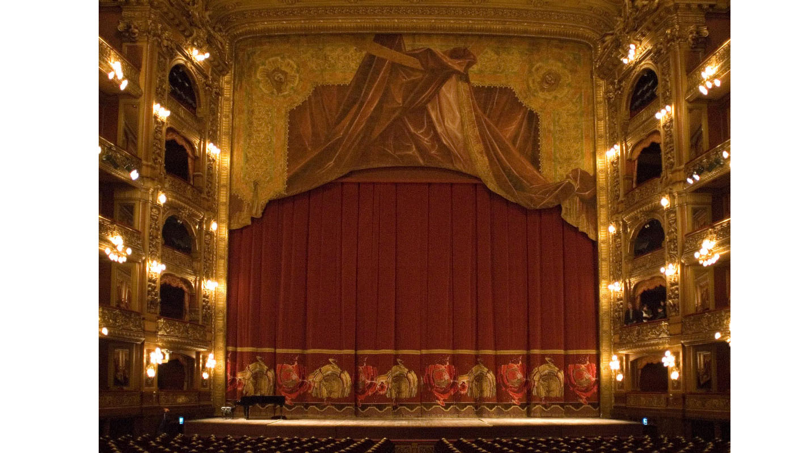

El teatroEl Teatro Colón de Buenos Aires es una de las salas de ópera más importantes del mundo. Su rico y prestigioso historial y las excepcionales condiciones acústicas y arquitectónicas de su edificio lo colocan al nivel de teatros como la Scala de Milán, la Ópera de París, la Ópera de Viena, el Covent Garden de Londres y el Metropolitan de Nueva York.
En su primera sede, el Teatro Colón funcionó desde 1857 hasta 1888, año en que fue cerrado para la construcción de una nueva sala. Ésta fue inaugurada el 25 de mayo de 1908 con una función de Aida. En sus inicios, el Colón contrataba para sus temporadas a compañías extranjeras; a partir de 1925 contó con sus propios cuerpos estables –Orquesta, Ballet y Coro- y sus propios talleres de producción, lo cual le permitió, ya en la década de 1930, organizar sus propias temporadas financiadas por el presupuesto de la ciudad. Desde entonces, el Teatro Colón ha quedado definido como un teatro de temporada o stagione con capacidad para realizar íntegramente la totalidad de una producción gracias al profesionalismo de sus cuerpos escenotécnicos especializados.
A lo largo de su historia, ningún artista de importancia de los últimos 110 años ha dejado de pisar su escenario. Baste mencionar a cantantes como Enrico Caruso, Claudia Muzio, Maria Callas, Régine Crespin, Birgit Nilsson, Plácido Domingo, Luciano Pavarotti, a bailarines como Vaslav Nijinski, Margot Fonteyn, Maia Plisetskaia, Rudolf Nureyev, Mijail Barishnikov, a directores como Arturo Toscanini, Herbert von Karajan, Héctor Panizza, Ferdinand Leitner, entre decenas más. También es frecuente que, siguiendo la tradición inaugurada por Richard Strauss, Camille Saint-Saëns, Pietro Mascagni y Ottorino Respighi, los compositores vengan al Colón a dirigir o supervisar los estrenos de sus propias obras.
Varios maestros de primer orden trabajaron aquí sostenidamente hasta lograr elevadas metas artísticas, como Erich Kleiber, Fritz Busch, directores de escena como Margarita Wallmann o Ernst Poettgen, maestros de baile como Bronislawa Nijinska o Tamara Grigorieva, directores de coro como Romano Gandolfi o Tullio Boni, sin dejar de mencionar a los numerosos solistas instrumentales y orquestas sinfónicas y de cámara que ofrecieron veladas inolvidables a lo largo de más de cien años de sostenida actividad.
A partir de 2010, el Teatro Colón exhibe un edificio restaurado en todo su esplendor original, dando un marco de distinguida jerarquía a sus presentaciones. Por todas estas razones, el Teatro Colón es un orgullo de la cultura argentina y un centro de referencia para la ópera, la danza y la música académica en todo el mundo.
